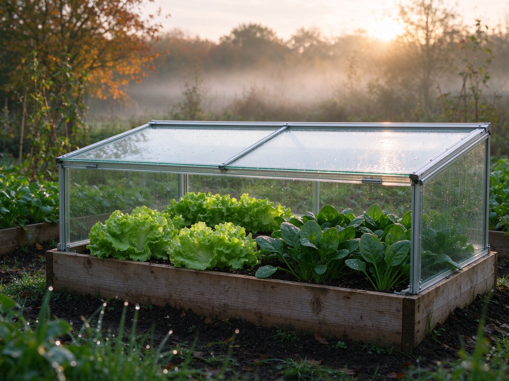

Cold Frames: Extend Your Growing Season Into Fall and Early Spring
You don't need a heated greenhouse to keep harvesting when the nights turn cold. A cold frame — essentially a bottomless box with a transparent lid — captures the low autumn sun and turns it into a few extra months of fresh greens. It's the cheapest, simplest season extender there is, and with the right plants it works from late fall straight through early spring.
What a Cold Frame Does
A cold frame is a miniature greenhouse: the glass or plastic top lets sunlight in, and the enclosed air warms the soil and plants inside. Even on a chilly 10°C (50°F) day, the interior can climb well above freezing during sunny hours — which is all many hardy greens need. It's an ideal step up from our raised bed garden when you want to keep eating past the first frost.
Build or Buy
- Buy — simple cold frames are inexpensive and available at garden centers and online.
- Build — four boards screwed into a shallow box (tall in back, shorter in front, so the lid tilts toward the sun), topped with an old window, a pane of glass, or a sheet of clear polycarbonate. If you can build a planter, you can build a cold frame.
Place it facing south with the low side to the south, in a spot that gets full winter sun. A little protection from wind helps it hold heat.
What to Grow
Cold-season greens (the stars)
Lettuce, spinach, kale, chard, arugula, and Asian greens thrive in the cool interior. These are the easiest wins — see our lettuce guide for the basics.
Roots and others
Carrots, beets, and radishes grow slowly through winter and taste sweeter for it. Herbs like parsley, cilantro, and thyme hang on through mild winters. In early spring, use the frame to harden off seedlings before planting out.
Using It Through the Seasons
Fall
Sow greens in late summer to early fall; the frame keeps them growing well past the first frost. This is the season when a cold frame pays for itself.
Winter
In milder climates, hardy greens keep producing all winter under the lid. In cold, snowy areas, the frame protects dormant plants and gets an early start come spring.
Early spring
Start lettuce and spinach 3-6 weeks before the last frost — the frame warms the soil and shields young plants. It's also perfect for starting crops before the ground is ready.
Three Simple Rules
- Ventilate on sunny days — prop the lid open a crack above 15°C (60°F); a sealed frame can overheat and cook your greens.
- Water sparingly in winter — the frame stays humid; check moisture and water less often than an open bed.
- Open the lid on mild days — a little air circulation keeps mildew away, much like our natural pest and disease advice.
The Bottom Line
A cold frame is the lowest-cost way to add a month or two (or three) to your growing year. Build one from an old window this fall, plant a box of lettuce and spinach, and keep harvesting fresh greens long after your neighbors' beds have gone dormant. For more self-sufficient winter eating, pair it with seed saving and a well-stocked compost pile — and your garden works almost year-round.